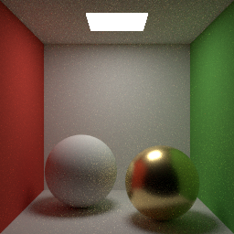

物理ベースレンダリング入門


本書は、CG を専門としないエンジニアに向けて、物理ベースレンダリング（PBR）の考え方と仕組みを解説する入門書である。光の物理量の定義から始めて、BRDF、レンダリング方程式、モンテカルロ積分を順に説明し、最後に NumPy と Pillow だけで動く小さなパストレーサーを読み解く。上の画像は、そのパストレーサーで描画したものである。
数式は避けずに示すが、それぞれの式が何を意味するのかを言葉と図で説明することを重視する。サンプルコードはすべて Python で書かれており、「付録 B サンプルコード」から閲覧・ダウンロードできる。